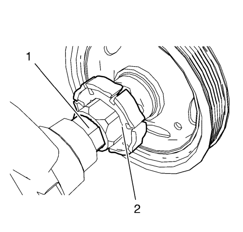
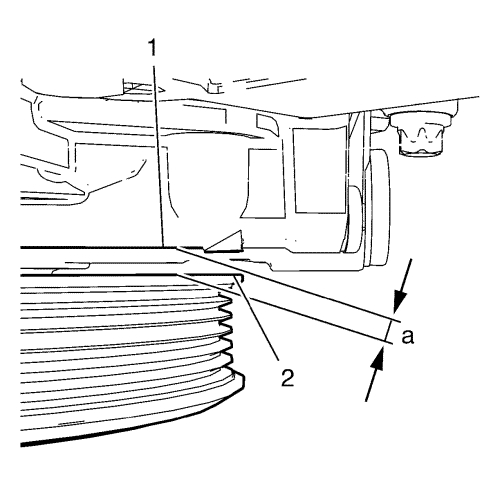
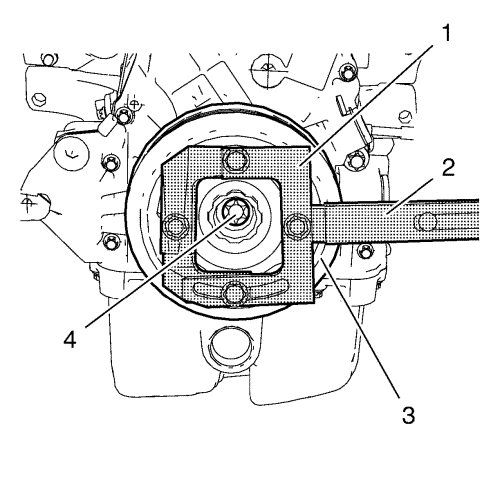

Montaje del balancín del cigüeñal
Herramientas especiales
| • | EN-470-B Llave de apriete angular |
| • | EN-49979 Seguro del alojamiento amortiguado del cigüeñal |
Si desea informarse sobre herramientas regionales equivalentes, consultar Herramientas especiales .

Nota: La brida del equilibrador del cigüeñal debe encajar en el hexágono del rotor de la bomba de aceite (2) y en el doble plano del cigüeñal (1).
- Monte el equilibrador del cigüeñal presionando cuidadosamente hasta su posición.

- Mida la distancia a entre el dámper del cigüeñal (2) y la cubierta delantera del motor (1). La distancia a debe ser 5,5 mm (0,21654 pulg.).
Nota: Jamás vuelva a utilizar el perno del equilibrador del cigüeñal
- Monte un NUEVO perno del equilibrador del cigüeñal.
Precaución:Consulte Precaución con las fijaciones en la sección Prólogo.
Precaución:Consulte Precaución de la fijación del par angular y estiramiento en la sección Prólogo.

- Apriete el perno del equilibrador del cigüeñal (4) mientras sujeta el equilibrador (3) con el seguro EN-49979 (1) y la extensión EN-956-1 (2) en el siguiente orden:
| 4.1. | Apriete el tornillo del dámper del cigüeñal a 150 N·m (111 lib. pie). |
| 4.2. | Apriete el perno del compensador del cigüeñal a 60° más, con una llave EN-470-B. |
| © Copyright Chevrolet. All rights reserved |